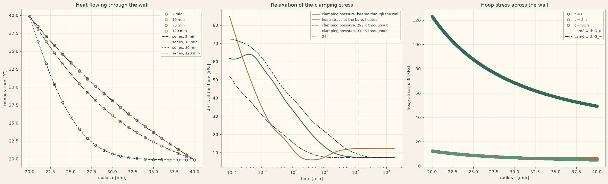
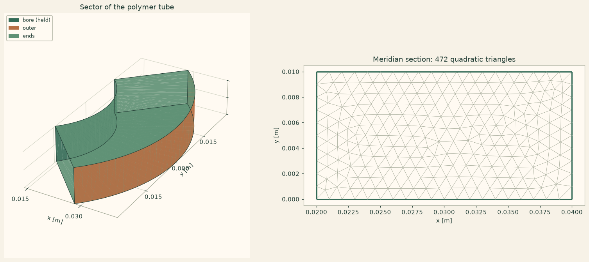

Docs › Examples › Stress relaxation of a viscoelastic tube heated through its wall
Viscoelasticity · 2D-axisymmetric
Stress relaxation of a viscoelastic tube heated through its wall
A thick-walled polymer tube, held expanded on a core, is heated from the bore; heat flows through the wall and the clamping stress relaxes fastest where the material is warm.
Run locally with OneSimulation. The example downloads are free. Running them requires an activated runtime. The current pilot runs on macOS on Apple Silicon with CPython 3.13. Installation and activation · View pilot plans. Scope of the reference checks.

What it computes
OneSimulation reads a ring of the tube from a STEP file, cuts its meridian section, solves transient axisymmetric heat conduction with error-controlled BDF steps and hands the recorded temperature field, as a function of position and time, to a thermorheologically simple generalized Maxwell material (four Prony terms, WLF shift) at every quadrature point of the axisymmetric small-strain solid. The script that builds the STEP file comes with the notebook.
What it checks
The temperature follows the Bessel series solution of the hollow cylinder within 0.03 K, the stored heat matches the series within 0.3 % and the heat balance within 0.5 %; the stresses match the Lamé solutions with G_0 at the start (0.07 %) and G_∞ after 30 h (1.3 %), and the clamping pressure stays between the isothermal tubes at 293 K and at 313 K.
Geometry
The notebook starts at the import of the CAD file viscoelastic_tube_thermal_relaxation.step: STEP (AP242), readable by any CAD program, with the names of the faces that the boundary conditions use. Put it next to the notebook.

The geometry script
The script viscoelastic_tube_thermal_relaxation_geometry.py builds the geometry with the CAD objects of OneSimulation and writes the file. Change a dimension there, run it, and run the notebook again.
"""Geometry of the OneSimulation example "Stress relaxation of a viscoelastic tube under a temperature rise".
Builds a 90-degree sector of a thick-walled tube (inner radius 20 mm, outer radius 40 mm, a 10 mm
long ring of a long tube, axis along z) with the CAD objects of OneSimulation, centred on the x axis,
and writes viscoelastic_tube_thermal_relaxation.step. The example computes on its meridian section
y = 0. The faces are named inner, outer, bottom and top.
"""
import numpy as np
from onesim.cad.d3 import AnnularCylinder
tube = AnnularCylinder(inner_radius=0.020, outer_radius=0.040, length=0.010)
sector = tube.sector(
np.pi / 2, axis=(0.0, 0.0, 1.0), start=(np.cos(-np.pi / 4), np.sin(-np.pi / 4), 0.0)
)
sector = sector.grouped(
inner=sector.select(
faces=lambda face: face.kind == "cylinder" and face.radius < 0.03
),
outer=sector.select(
faces=lambda face: face.kind == "cylinder" and face.radius > 0.03
),
bottom=sector.select(faces=lambda face: abs(face.center[2]) < 1e-9),
top=sector.select(faces=lambda face: abs(face.center[2] - 0.010) < 1e-9),
)
sector.save("viscoelastic_tube_thermal_relaxation.step")The notebook
The complete notebook, cell by cell. Run it to produce the figures and the comparison printout.
Polymer seals, pipes and bushings that are mounted with an interference lose their clamping stress over time, and they lose it faster when they are warm. For thermorheologically simple materials the temperature only changes the speed of the material clock: at a point with the temperature history \(T(t)\) the relaxation runs on the reduced time
and the shear modulus relaxes as a Prony series \(G(\xi)=G_\infty+\sum_i G_i\,e^{-\xi/\tau_i}\). When the temperature varies across the wall, every point has its own clock, and the stresses redistribute between the fast warm and the slow cold material.
Setup. A long tube, inner radius \(a=20\) mm, outer radius \(b=40\) mm. At \(t=0\) the bore is expanded by \(u_a=0.2\) mm and held; the outside is free of load. Material: \(G_\infty=0.5\) MPa and four branches (2 MPa, 10 s), (1.5 MPa, 100 s), (1 MPa, 1000 s), (0.5 MPa, 5000 s); elastic bulk modulus 10 MPa; WLF constants \(C_1=8.86\), \(C_2=101.6\) K at \(T_r=293\) K; thermal conductivity 0.2 W/(m K), density 1200 kg/m³, heat capacity 1500 J/(kg K) (diffusivity \(\kappa=1.1\cdot10^{-7}\) m²/s). The tube starts at 293 K; from \(t=0\) the bore is held at 313 K by the core and the outer surface at 293 K by the surroundings. The thermal expansion is left out, so the temperature acts on the stresses only through the material clock. The ring comes from the CAD file viscoelastic_tube_thermal_relaxation.step, written by viscoelastic_tube_thermal_relaxation_geometry.py with the CAD objects of OneSimulation; both problems use its meridian section.
| edge of the section | heat conduction | mechanics | |---|---|---| | inner | \(T=313\) K | radial displacement \(u_a\) (held from \(t=0\)) | | outer | \(T=293\) K | free | | bottom, top | insulated | axial displacement 0 (long tube) |
References. (1) Heat conduction: the temperature is the steady logarithmic profile \(T_s(r)\) plus a series of decaying modes, \(T=T_s(r)+\sum_n A_n U_0(\lambda_n r)\,e^{-\kappa\lambda_n^2 t}\) with \(U_0(\lambda r)=J_0(\lambda r)Y_0(\lambda a)-J_0(\lambda a)Y_0(\lambda r)\), \(U_0(\lambda_n b)=0\) and \(A_n\) from the orthogonality of the modes with weight \(r\); the heat stored in the wall equals the heat that has flowed in through the bore minus the heat that has left through the outer surface. (2) Elastic limits: the instantaneous response and the fully relaxed one are elastic with \(G_0=G_\infty+\sum G_i\) and \(G_\infty\), whatever the temperature (Lamé, plane strain, \(\lambda=K-\tfrac23G\)):
(3) Isothermal limits: a tube kept at 293 K relaxes most slowly, a tube at 313 K throughout most quickly; by time-temperature superposition the latter is the isothermal tube at the reduced time \(t/a_T(313\,\text{K})\). The clamping pressure of the heated tube on the core lies between the two. The hoop stress at the bore need not: the warm inner layer relaxes first and hands its share of the load to the cold outer layer.
import numpy as np
from onesim.cad.exchange import load
from onesim.materials import IsotropicSolid
from onesim.materials.solids import ThermorheologicalPronyMaterialPoint
from onesim.meshing import TriangularMesher
from onesim.numerics import Numerics
from onesim.numerics.fem import FiniteElement, Lagrange, RevolvedH1SpaceFactory
from onesim.numerics.linear import SparseDirect
from onesim.numerics.time import BDF, AdaptiveTimeStep, BackwardEuler
from onesim.physics.heat_transfer import FixedTemperature, HeatConduction, HeatFlux
from onesim.physics.solid_mechanics import SmallStrainSolid
from onesim.simulation import Problem, Simulation
from onesim.simulation.initial_conditions import InitialValue
from onesim.visualization import plots, theme
from scipy.integrate import quad
from scipy.optimize import brentq
from scipy.special import j0, y0
theme.set()Geometry and mesh
load returns the sector of the ring with its named faces; section cuts the meridian plane \(y=0\), whose \(x\) coordinate is the radius. Quadratic triangles of 1 mm serve both problems.
ring = load("viscoelastic_tube_thermal_relaxation.step")
faces = ring.boundaries
meridian = ring.section((0, 1, 0), origin=(0, 0, 0))
edges = meridian.boundaries
mesh = TriangularMesher(target_size=0.001).generate(meridian)
fig = plots.figure(1, 2, size=(14, 6))
plots.geometry(
ring,
selection={
"bore (core, 313 K)": faces.inner,
"outer (293 K)": faces.outer,
"ends": faces.bottom | faces.top,
},
labels=False,
camera=plots.Camera(elevation=30, azimuth=-60),
title="Sector of the polymer tube",
ax=fig[0],
)
plots.mesh(
mesh,
groups=("all",),
legend=False,
title=f"Meridian section: {mesh.cell_count} quadratic triangles",
ax=fig[1],
)
plots.show()Heat conduction through the wall
Transient axisymmetric conduction (RevolvedH1SpaceFactory), second-order BDF with error-controlled steps of at most one minute for 30 hours, long enough for the slowest branch to relax at the cold outer surface.
inner, outer, expansion, minute, hour = 0.020, 0.040, 0.2e-3, 60.0, 3600.0
conductivity, density, capacity = 0.2, 1200.0, 1500.0
heat = HeatConduction(
domain=meridian.domain(),
material=IsotropicSolid(
density=density,
specific_heat_capacity=capacity,
thermal_conductivity=conductivity,
youngs_modulus=1e7,
poisson_ratio=0.3,
thermal_expansion_coefficient=0.0,
),
)
problem = Problem(
name="tube wall heating",
geometry=meridian,
physics=(heat,),
boundary_conditions=(
FixedTemperature(physics=heat, boundary=edges.inner, value=313.0),
FixedTemperature(physics=heat, boundary=edges.outer, value=293.0),
HeatFlux(physics=heat, boundary=edges.bottom | edges.top, value=0.0),
),
initial_conditions=(InitialValue(heat.temperature, 293.0),),
)
numerics = Numerics(
spatial=FiniteElement(
element=Lagrange(order=2), quadrature_order=4, provider=RevolvedH1SpaceFactory()
),
linear_solver=SparseDirect(),
time_integrator=BDF(order=2, startup=BackwardEuler()),
)
thermal = Simulation(problem=problem, mesh=mesh, numerics=numerics).run(
start_time=0.0,
end_time=30 * hour,
time_step=AdaptiveTimeStep(
initial=1.0, minimum=0.01, maximum=60.0, relative_tolerance=1e-4
),
)
temperature_field = thermal.field(heat.temperature)
print(
f"heat conduction: {len(temperature_field.times) - 1} accepted steps up to {temperature_field.times[-1] / hour:.0f} h"
)Viscoelastic tube
time_interpolant() turns the recorded temperature history into a function of position and time; as the temperature of ThermorheologicalPronyMaterialPoint it gives every quadrature point its own temperature at every step. Two isothermal tubes at 293 K run for comparison, one over the same times and one long enough to provide the reduced times of the hot limit.
terms = ((2e6, 10.0), (1.5e6, 100.0), (1e6, 1000.0), (0.5e6, 5000.0))
polymer = ThermorheologicalPronyMaterialPoint(
long_term_shear_modulus=0.5e6,
terms=terms,
bulk_modulus=10e6,
reference_temperature=293.0,
temperature=temperature_field.time_interpolant(),
wlf_constants=(8.86, 101.6),
)
cold_polymer = ThermorheologicalPronyMaterialPoint(
long_term_shear_modulus=0.5e6,
terms=terms,
bulk_modulus=10e6,
reference_temperature=293.0,
)
times = np.r_[
0.0, np.geomspace(0.5, 2 * hour, 50), np.geomspace(2 * hour, 30 * hour, 13)[1:]
]
supports = (
(edges.inner, "r", expansion),
(edges.bottom, "z", 0.0),
(edges.top, "z", 0.0),
)
tube = lambda material, steps: SmallStrainSolid(
youngs_modulus=1e7,
poisson_ratio=0.3,
kinematics="axisymmetric",
material_point=material,
).solve(mesh=mesh, times=steps, order=2, displacements=supports)
result, cold = tube(polymer, times), tube(cold_polymer, times)
radius = result.quadrature_coordinates[:, 0]
bore = int(np.argmin(radius))Heat conduction against the series solution and the heat balance
The eigenvalues \(\lambda_n\) are bracketed by sign changes of \(U_0(\lambda b)\); 40 modes. The stored heat follows from the temperature rise across the wall, the heat flows through the bore and the outer surface from the computed heat flux (per metre of tube). The balance is taken from 2 minutes on: at the very start the flux through the suddenly heated bore is singular.
U = lambda lam, r: j0(lam * r) * y0(lam * inner) - j0(lam * inner) * y0(lam * r)
grid = np.linspace(1.0, 3000.0, 300000)
signs = np.nonzero(np.diff(np.sign(U(grid, outer))))[0][:40]
eigenvalues = [brentq(lambda lam: U(lam, outer), grid[i], grid[i + 1]) for i in signs]
steady = lambda r: 293.0 + 20.0 * np.log(outer / r) / np.log(outer / inner)
amplitudes = [
quad(lambda r: (293.0 - steady(r)) * U(lam, r) * r, inner, outer, limit=200)[0]
/ quad(lambda r: U(lam, r) ** 2 * r, inner, outer, limit=200)[0]
for lam in eigenvalues
]
kappa = conductivity / (density * capacity)
series = lambda r, t: steady(r) + sum(
A * U(lam, r) * np.exp(-kappa * lam**2 * t)
for A, lam in zip(amplitudes, eigenvalues)
)
profile = np.linspace(inner, outer, 81)
section_points = np.column_stack((profile, np.full_like(profile, 0.005)))
history = temperature_field.time_interpolant()
for minutes in (2.0, 5.0, 15.0, 30.0, 60.0, 120.0):
print(
f"t = {minutes:5.0f} min: temperature across the wall within {np.abs(history(section_points, 60 * minutes) - series(profile, 60 * minutes)).max():.4f} K "
f"of the series solution (mid-wall {series(0.03, 60 * minutes) - 273.15:.3f} °C)"
)
recorded = temperature_field.times
wall_points = np.array([[inner, 0.005], [outer, 0.005]])
window = recorded[(recorded >= 2 * minute) & (recorded <= hour)]
flows = np.array(
[
2
* np.pi
* wall_points[:, 0]
* thermal.field(heat.heat_flux).evaluate(wall_points, time=t)[:, 0]
for t in window
]
)
net = np.trapezoid(flows[:, 0] - flows[:, 1], window)
stored = lambda values: np.trapezoid(
2 * np.pi * profile * density * capacity * (values - 293.0), profile
)
for minutes in (5.0, 30.0, 120.0):
print(
f"t = {minutes:5.0f} min: heat stored in the wall {stored(history(section_points, 60 * minutes)) / 1e3:8.4f} kJ/m "
f"(series {stored(series(profile, 60 * minutes)) / 1e3:8.4f}, steady profile {stored(steady(profile)) / 1e3:8.4f})"
)
gain = stored(history(section_points, window[-1])) - stored(
history(section_points, window[0])
)
print(
f"heat balance from {window[0] / minute:.1f} to {window[-1] / minute:.1f} min: stored heat grew by {gain:.1f} J/m, "
f"net heat flowed in through bore and outer surface {net:.1f} J/m (difference {100 * (net / gain - 1):+.2f} %)"
)
print(
f"steady state: heat flow through the bore {flows[-1, 0]:.3f} W/m and the outer surface {flows[-1, 1]:.3f} W/m, "
f"2πkΔT/ln(b/a) = {2 * np.pi * conductivity * 20.0 / np.log(outer / inner):.3f} W/m"
)Viscoelastic tube against its limits
The hot limit is the long isothermal run read at the reduced time \(t/a_T(313\,\text{K})\). The components are \((r, z, \theta)\).
bulk, initial_modulus, relaxed_modulus = 10e6, 0.5e6 + sum(g for g, _ in terms), 0.5e6
lame = (
lambda shear, r: 2
* shear
* expansion
/ (1 / inner + shear * inner / ((bulk + shear / 3) * outer**2))
* (1 / outer**2 + 1 / r**2)
)
hot_shift = polymer.shift_factor(313.0)
long_times = np.r_[0.0, np.geomspace(0.5 / hot_shift, 30 * hour / hot_shift, 70)]
cold_long = tube(cold_polymer, long_times)
hot_limit = np.interp(times / hot_shift, long_times, cold_long.stress[:, bore, 2, 2])
heated, cold_bore = result.stress[:, bore, 2, 2], cold.stress[:, bore, 2, 2]
clamping = {
name: -run[:, bore, 0, 0]
for name, run in (("heated", result.stress), ("cold", cold.stress))
}
clamping["hot"] = -np.interp(
times / hot_shift, long_times, cold_long.stress[:, bore, 0, 0]
)
excursion = (
np.maximum(
np.maximum(
clamping["heated"] - clamping["cold"], clamping["hot"] - clamping["heated"]
),
0.0,
)[1:]
/ clamping["heated"][0]
)
print(f"shift factor at 313 K: a_T = {hot_shift:.4f}")
print(
f"t = 0: hoop stress within {100 * np.abs(result.stress[0, :, 2, 2] / lame(initial_modulus, radius) - 1).max():.2f} % of Lamé with G_0 at all points"
)
print(
f"t = 30 h: hoop stress within {100 * np.abs(result.stress[-1, :, 2, 2] / lame(relaxed_modulus, radius) - 1).max():.2f} % of Lamé with G_∞ at all points "
f"(remaining branch stress at 293 K after 30 h: {100 * (polymer.relaxation_modulus(30 * hour) - relaxed_modulus) / relaxed_modulus:.3f} % of G_∞)"
)
print(
f"clamping pressure on the core (radial stress at the bore) between the isothermal limits at {np.sum(excursion == 0)} of {len(excursion)} times, "
f"largest excursion {100 * excursion.max():.3f} % of the initial clamping pressure"
)
for minutes in (1.0, 10.0, 30.0, 60.0, 120.0):
k = int(np.argmin(np.abs(times - 60 * minutes)))
print(
f"t = {times[k] / minute:6.1f} min: clamping pressure {clamping['heated'][k] / 1e3:7.2f} kPa (293 K throughout {clamping['cold'][k] / 1e3:7.2f}, "
f"313 K throughout {clamping['hot'][k] / 1e3:7.2f}); bore hoop stress {heated[k] / 1e3:7.2f} kPa (limits {cold_bore[k] / 1e3:7.2f}, "
f"{hot_limit[k] / 1e3:7.2f})"
)Figures
Left the temperature across the wall at several times, computed (points) and from the series (lines); middle the clamping pressure on the core over time with the two isothermal limits, and the hoop stress at the bore, which dips while the warm inner layer unloads; right the hoop stress across the wall at the start, after 2 h and after 30 h with the elastic limits.
line = np.linspace(inner, outer, 200)
two_hours = int(np.argmin(np.abs(times - 2 * hour)))
fig = plots.figure(1, 3, size=(20, 6))
plots.line(
points={
f"{m:.0f} min": (
1e3 * profile[::4],
history(section_points[::4], 60 * m) - 273.15,
)
for m in (2.0, 10.0, 30.0, 120.0)
},
reference={
f"series, {m:.0f} min": (1e3 * line, series(line, 60 * m) - 273.15)
for m in (2.0, 10.0, 30.0, 120.0)
},
xlabel="radius r [mm]",
ylabel="temperature [°C]",
title="Heat flowing through the wall",
legend="upper right",
ax=fig[0],
)
plots.line(
y={
"clamping pressure, heated through the wall": (
times[1:] / minute,
clamping["heated"][1:] / 1e3,
),
"hoop stress at the bore, heated": (times[1:] / minute, heated[1:] / 1e3),
},
reference={
"clamping pressure, 293 K throughout": (
times[1:] / minute,
clamping["cold"][1:] / 1e3,
),
"clamping pressure, 313 K throughout": (
times[1:] / minute,
clamping["hot"][1:] / 1e3,
),
},
vlines={"2 h": 120.0},
scale="logx",
xlabel="time [min]",
ylabel="stress at the bore [kPa]",
title="Relaxation of the clamping stress",
legend="upper right",
ax=fig[1],
)
plots.line(
points={
"t = 0": (1e3 * radius, result.stress[0, :, 2, 2] / 1e3),
"t = 2 h": (1e3 * radius, result.stress[two_hours, :, 2, 2] / 1e3),
"t = 30 h": (1e3 * radius, result.stress[-1, :, 2, 2] / 1e3),
},
reference={
"Lamé with G_0": (1e3 * line, lame(initial_modulus, line) / 1e3),
"Lamé with G_∞": (1e3 * line, lame(relaxed_modulus, line) / 1e3),
},
xlabel="radius r [mm]",
ylabel="hoop stress σ_θ [kPa]",
title="Hoop stress across the wall",
legend="upper right",
ax=fig[2],
)
plots.show()Going further
Add the thermal expansion of the polymer and see the warm bore press harder on the core at first; cool the core down again after an hour and watch the relaxation slow down; or replace the fixed outer temperature by a heat transfer coefficient to the surroundings.